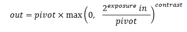
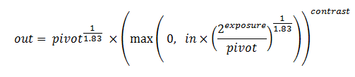
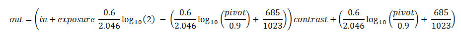

ExposureContrast 元素可模拟调整图像的曝光，并修改浅色和深色之间的对比度。
它是 Academy/ASC XML 颜色变换格式的 Autodesk 扩展。
如果颜色变换用于显示，则根据应用程序，用户仍可以交互方式调整曝光和对比度，只要 CTF 文件至少包含一个带有 DynamicParameter 子元素的 ExposureContrast 元素。在这种情况下，将仅在显示中忽略在 ECParams 子元素中定义的相应参数值，而是在变换链中出现带有 DynamicParameter 子元素的 ExposureContrast 元素的每个点应用应用程序中设置的值。
版本 1.2。
| 值 | 含义 |
|---|---|
| "linear" |  |
| "video" |  |
| "log" |  |
<ProcessList id="561c5aba-8709-477c-8211-7ec4a6fe8820">
<ExposureContrast inBitDepth="16f" outBitDepth="32f" style="linear">
<ECParams exposure="0.65" contrast="1.2" pivot="1" />
<DynamicParameter param="EXPOSURE" />
<DynamicParameter param="CONTRAST" />
</ExposureContrast>
</ProcessList>